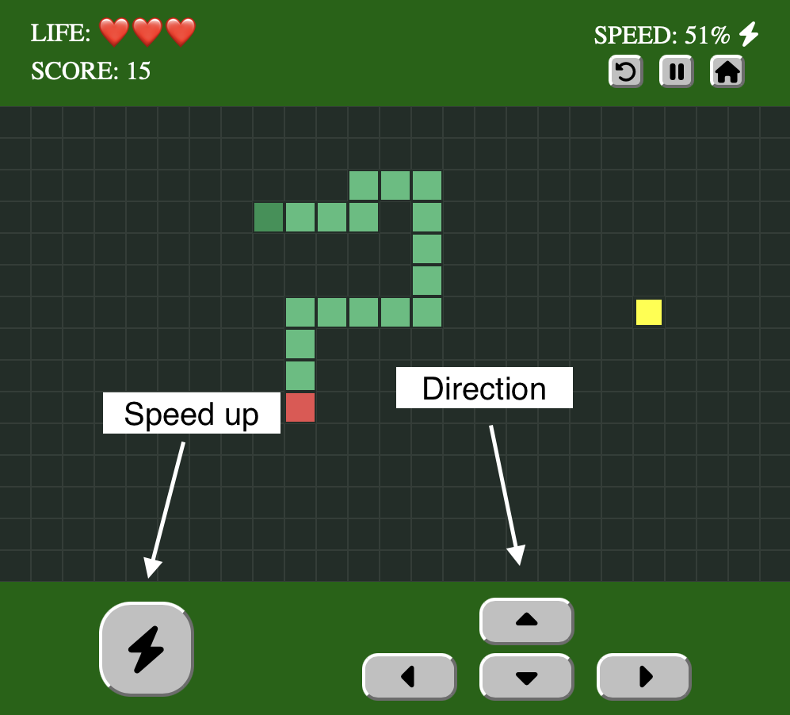
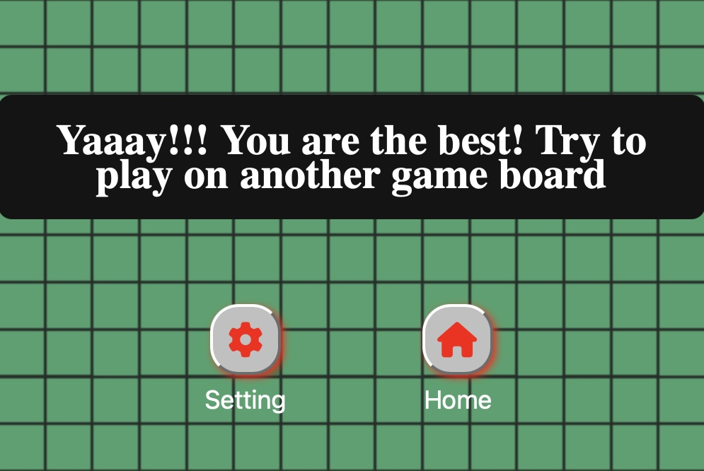

The classic, old-school Snake game. The UI might look simple, but there's some serious JavaScript underneath — built while learning the DOM.
Life: ❤️❤️❤️
Score: 0
Speed: 30%
Game Setting
Are You Ready to have Fun!
🎮 Game Board Size
🔊 Sound Effect
How to Play the Game!
A simple, classic, and fun Snake game where the player controls the snake and guides it toward food while avoiding collisions with the walls and itself.
Rules
If the snake collides with a wall or itself, it will lose one life. When the number of lives reaches 0, the game is over.
The snake cannot turn directly in the opposite direction. For example, if the snake is moving from left to right, the player cannot immediately turn it back to the left. The snake also prevents some direction inputs when moving next to a wall. These restrictions help prevent the snake from immediately colliding with itself or the wall because of an input mistake.
State and Conditions
When the snake collides with itself or a wall, it loses one life. It then moves back to its previous three positions, and its speed slows down for three seconds as a safety period. During this situation,the snake will automatically turn toward the food to help the player recover from the collision.
After that, the snake activates Shield Mode for 10 seconds. During this time, it can hit the wall without losing a life, and it will automatically turn to avoid getting stuck. It can also pass through its own body without triggering another collision. The shield remains active for the full 10 seconds, giving the player time to recover and continue safely.
How to Control
There are several control methods for both computer and mobile.
On a computer, use the Arrow Keys keys or
WASD to control the direction of the snake.
Press and hold the B key to boost the snake's speed.

On mobile, use the arrow buttons and boost button provided on the game display.
Game Settings
Dynamic Game Boards
You can change and play on three different game boards: Small (10 rows x 15 columns), Medium (15 rows x 20 columns), and Large (20 rows x 25 columns). Choose the game board you want to play on, then click the Apply button to activate it. After that, exit this panel and start the game.
Sound Control System
You can turn music and sound effects on or off using the checkboxes, and control their volume with the dynamic sliders. I prefer 30% for both, which is the original default value, but you can change them to whatever you like.Playing with sound on is really fun!
Unfortunately, saving your settings is not available yet. After refreshing the page, the game board and sound settings will return to their original default values, so you will need to apply your preferred settings again.
What I learned from this Project
First of all, I'm so greateful to Khan Academy, I learned a lot about state managment and logical thinking there. I brought those concerpts into this game from my first ever game, Beaver Stick Collector, which I built on Khan Academy.
When I started to build the game, I thought I would use simple and light state manangement, like I did in my previous two games. But I ended up building a much more complete state management system for the game. The snake might look like simple colored blocks, but underneath, there is some serious JavaScript and the most complete state management I have ever written. So I want to carefully document what I faced and learned while building this game.
Game Board
For this game, I started with the game board and cells, which I built with CSS Grid using rows and columns, just like I did in my Memory game. One of the things I like most about this grid is that I can dynamically change the number of rows and columns, which allows me to create different game boards that you can change in the Game Setting.
And the snake and the food become simple classes of that gird.
Snake
Creating the snake was simple but interesting. I reused the game board's row and column data with a JavaScript array. I started with a three-segment snake, where each segment stores the row and column of its cell.
The first item in the array is the head, while the remaining items make up the body and tail. Then I use CSS to give the head, body, and tail their own appearance.
Food
Food creation is similar to the snake because it also reuses the game board's row and column data. The difference is that I randomly choose a row and column from the game board and use that position to render the food.
At first, the food could appear on a cell already occupied by the snake. So I built a reusable function called occupied() to check whether a row and column are already being used by the snake.
I then use that function when creating new food. If the randomly selected cell is occupied, the program keeps looking for another position until it finds a free cell.
Eventually, the snake can occupy every cell on the board. At that point, there is no valid position left for new food. I added a separate game state and condition for this situation, "Level Complete". If you reach it, the game shows: "Yaaay!!! You are the best! Try to play on another game board."

Image 1.1 - Level completed preview
Movement and Direction
Here is the main section: snake movement. Before making any move, the snake has to know which direction it should move. So, I set the direction as:
let direction = {
row: 0,
column: 1
};
This means the snake is moving horizontally to the right.
The row value controls vertical movement, while the column value controls horizontal movement.
So, now the snake knows its direction. But how does it actually move? This is where the interesting part comes in with unshift(), a JavaScript array method.
The unshift() method adds one or more elements to the beginning of an array. In this game, I use it to add a new head to the beginning of the snake array.
Actually, right now the snake can't move by itself. So, I created a game loop using JavaScript's setTimeout() function and added the snake movement to the loop.
function gameLoop() {
moveSnake();
setTimeout(gameLoop, 400);
}
This makes the snake move in its current direction every 400 milliseconds.
Now the snake gets a new head, but it would keep growing every time it moves because I am adding a new segment with unshift() without removing anything. That's not what I want for the game right now.
So, I use another JavaScript array method called pop(), which removes the last element from an array.
Now the snake can move without growing. Every time it makes a move, unshift() adds a new head and pop() removes the last segment. This makes the whole snake look like it is moving through the game board.
Here is the snake without the pop() function:
Video 1.1 - Snake movement without pop()
Here is the snake with pop():
Video 1.2 - Snake movement with pop()
The snake grows by one segment every time it eats food. This time, I skip the pop() function, so the new segment stays on the snake.
Video 1.3 - Snake growth after eating food
Game States and Control Buttons
Since the game has reached a real game state, I provide buttons for each specific state, such as Home, Start, Restart, Pause, Play, Setting, and Info. The interesting thing is that all of these buttons and states work with one reusable display panel. The panel is managed with CSS and controlled with JavaScript. It appears on top of the game board when needed and stays hidden otherwise.
For game controls, since the game can be played on both computers and mobile devices, I created keyboard controls as well as on-screen control buttons for mobile. You can learn more about both controls in the Game Information section.
There is also an interesting condition with the direction controls. The snake does not immediately change its current direction when I press a control button. Instead, I store the requested direction in another variable called nextDirection.
I use direction for the direction the snake is currently moving and nextDirection for the direction it should move next. When the next game-loop update happens, I apply the requested direction.
let nextDirection = {
row: 0,
column: 1
};
direction = nextDirection;
I faced a similar problem with the game loop. Since the game loop uses setTimeout(), I need to control the existing timer before starting another one. I use clearTimeout() to stop the previous timer and then schedule the next game-loop update.
This also gives me control over when the loop should stop, such as when the game is paused or when the game is over.
Essential Other Functions
I don't want the game to end simply by guiding the snake toward the food. So, I give the snake three lives as a chances. The rule is simple: every time the snake collides with itself or a wall, it loses one life. When its life reaches zero, the game is over. This thinking led me to create the following functions.
I also don't want the snake to simply lose one life and continue from the same dangerous position. So, I created a recovery system. When the snake collides, it first uses moveBack() to return to one of its previous positions.
But how can it move back? It needs to remember where it was before the collision. A JavaScript array helps me do that. I record the snake's previous positions in another array called snakeSnapshots.
To create each snapshot, I use JavaScript's map() array method. It goes through every segment of the snake and creates a new object containing its row and column. This gives me a new array containing a copy of the snake's current positions. But I only need the last three snapshots, so I remove the older ones:
const snakeSnapshots = [];
function recordPositions() {
const position = snake.map(segment => ({
row: segment.row,
column: segment.column
}));
snakeSnapshots.push(position);
if (snakeSnapshots.length > 3) {
snakeSnapshots.shift();
}
}
shift() removes the first element from an array. So, whenever there are more than three snapshots, the oldest one is removed and the most recent three positions are kept.
After moving back, the snake slows down for three seconds. This gives the player some time to react and recover from the difficult situation.
Then, the snake activates shield mode for ten seconds. During this time, collisions with the wall and itself do not reduce another life. The snake also tries to turn away from the dangerous direction. Basically, the snake tries to turn toward the food, but when the food is in the same row or column as the snake, it chooses a safe direction.
These four functions — moveBack(), slowDown(), shieldOn(), and autoTurn() — work together to give the player a chance to recover from a difficult situation instead of immediately losing another life.
Conclusion
When I started this project, I thought I was going to build a simple
Snake game. But it became much more than that. I learned how different JavaScript concepts such as arrays, functions, conditions, loops, state management, timers, and DOM manipulation can work together to build a real game.
The UI may still look like a classic and simple Snake game, but underneath it has much more logic than I expected when I started. This project also taught me how to think about problems, break them into smaller functions, and improve my approach when my first idea didn't work.
I also have many ideas that I didn't add to this version, especially a more intelligent AI system that can find its own path toward the food. I would like to explore that in a future version rather than making this project unnecessarily complicated now.
For now, I am happy with what I built and, most importantly, with what I learned from building it.
 Press and hold the B key to boost the snake's speed.
Press and hold the B key to boost the snake's speed.